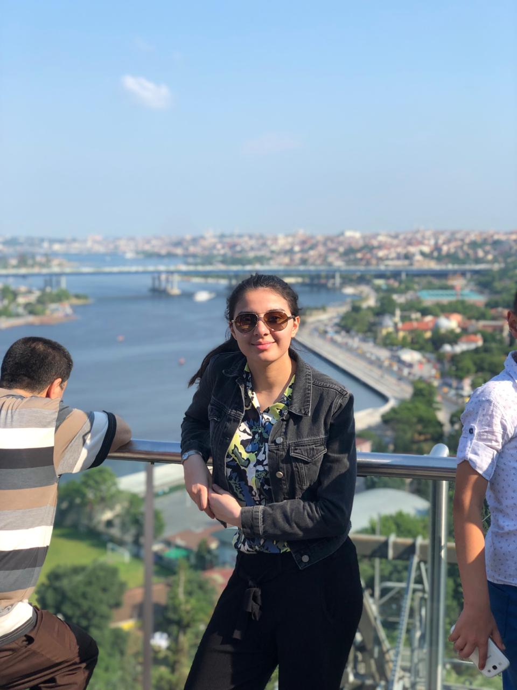
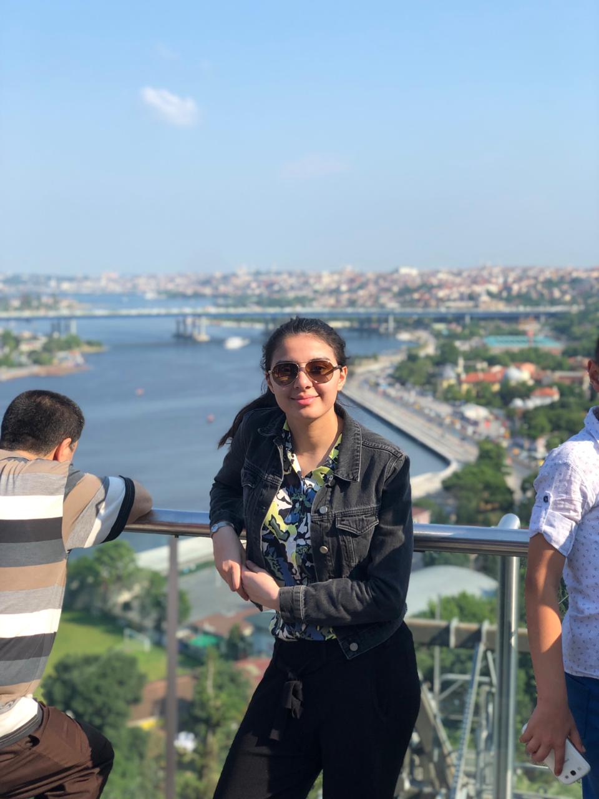
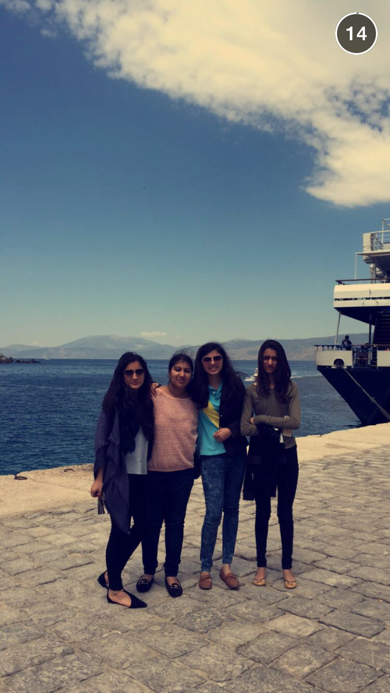

Europe's Beauty
 Paris, France (Source: Hiba's Personal Pictures)

Istanbul, Turkey (Source: Hiba's Personal Pictures)
Paris, France (Source: Hiba's Personal Pictures)

Istanbul, Turkey (Source: Hiba's Personal Pictures)
Europe's Bucket-list
Must-Do Activities Before I die
| Country |
Area |
Extreme Adventure Activity |
| Austria |
Tyrol |
Paragliding |
| Greece |
Corfu |
Parasailing |
| Italy |
Sicily |
Mountainbiking |
| Spain |
Pamplona |
Running with the Bulls |
| Croatia |
Cetina Canyon |
Zip-lining |
| Turkey |
Cappadocia |
Hot Air Balloon Ride |
Europe's Beauty

Greece (Source: Hiba's Personal Pictures)
 Greece (Source: Hiba's Personal Pictures)
Greece (Source: Hiba's Personal Pictures)
Culture
culture/ festivals / people/ tradition
Festivals
culture/ festivals / people/ tradition
Food
culture/ festivals / people/ tradition